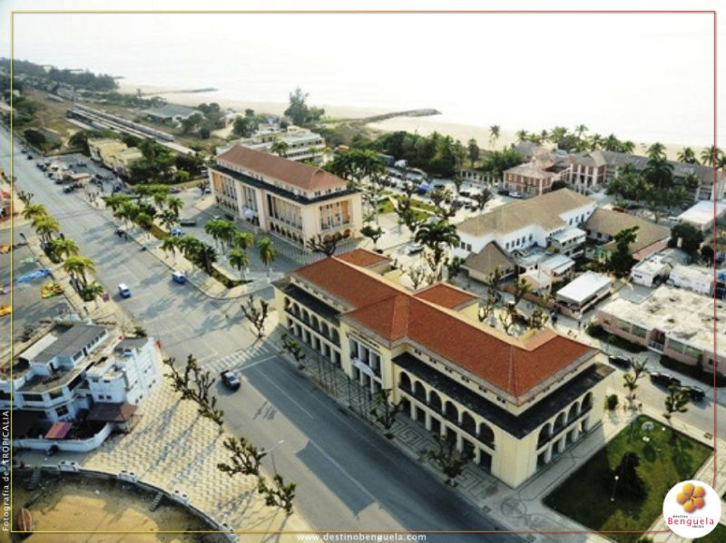

O nosso Lobito.
Lobito é um dos Municípios da província de Benguela, localizado na costa do Oceano Atlântico. Um lugar único e cheio de história e pontos para se descobrir e visitar em Angola. A origem da palavra vem do substantivo "pitu", antecedida da partícula classificativa olu, ficaria o termo "olupitu", que significa a "porta ou mesmo a passagem" que as caravanas de carregadores, ao descer dos morros vindos do interior, percorreriam, antes de atingirem a "praça comercial" da Catumbela.
Com o uso continuado e o tempo, surgiu o nome próprio, pelo que iria perder a letra "o" inicial, logo ficaria "Lupitu" foi aportuguesado para "Lobito".
Lobito é um lugar conhecido por aqueles que passam como a sala de visita da província de Benguela, mas sua identidade é muitas vezes desconhecida pelos turistas que visitam a região. O grande referencial geográfico do município é a baía de Lobito, que, juntamente com a restinga de Lobito, foram os elementos fundamentais para a formação e o desenvolvimento do porto e da cidade
Portanto, se você estiver no Lobito, não deixe de explorar os manguezais e ter a chance de testemunhar a beleza dos grupos de flamingos que habitam a região.
É uma experiência única e fascinante que certamente deixará lembranças inesquecíveis.
Lobito, Benguela, AO
Características:
Video